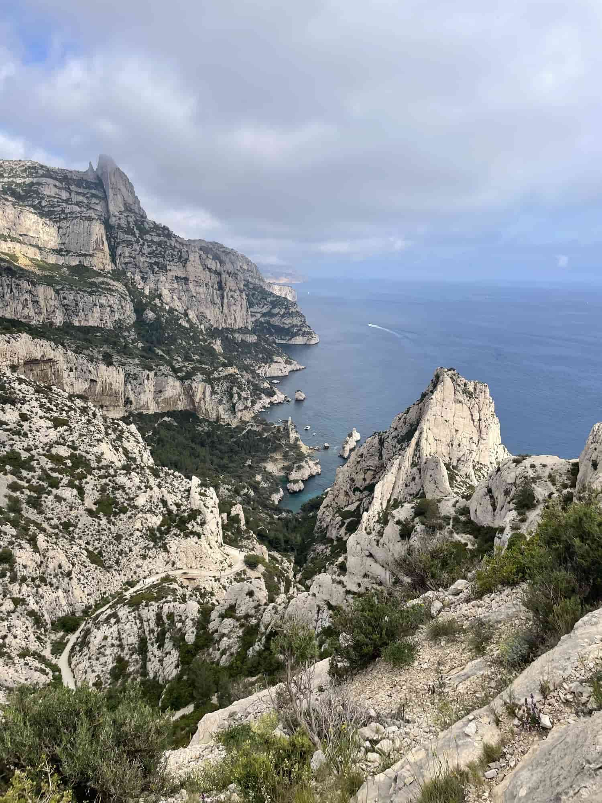

Les infos clés :
| 📍 Départ : | Parking de Luminy, Marseille |
| 📏 Distance : | 10,5 km |
| ⬆️ Dénivelé : | +465 m |
| ⏱️ Durée : | 3h de marche / 5h-6h avec baignades et arrêts |
| 💪 Difficulté : | Moyenne (2 passages techniques avec chaîne) |
| 📅 Meilleure période : | Printemps / Automne (accès restreint en été) |

Pourquoi faire la rando dans ce sens ?
Depuis Luminy, on descend d’abord sur Morgiou — la calanque se dévoile progressivement au fil de la descente, c’est magique. On remonte ensuite vers Sugiton avant de terminer par le belvédère, avec une vue imprenable sur les deux calanques. Clairement le meilleur sens pour profiter au maximum.
Les points forts du parcours
- La descente progressive vers Morgiou et son village de pêcheurs
- Le passage entre Morgiou et Sugiton — technique mais magnifique
- L’eau turquoise de Sugiton, idéale pour une baignade
- Le belvédère de Sugiton en point final — vue à 180° sur les deux calanques
Les passages techniques à connaître
⚠️ Deux passages avec chaîne sur ce parcours :
- Un sur la descente vers Morgiou
- Un entre Morgiou et Sugiton
Pas de panique, ils sont praticables par la plupart des randonneurs — mais il faut être à l’aise avec les terrains escarpés et ne pas avoir le vertige.
💡 Bon plan : juste le belvédère de Sugiton
Pas envie de faire toute la rando ? Le belvédère de Sugiton est accessible facilement depuis le parking de Luminy en 30-40 min aller — sentier bien balisé et sans difficulté technique. La vue est déjà exceptionnelle et tout le monde peut y accéder.
Conseils pratiques
- Partez tôt le matin en été pour éviter la chaleur et la foule
- Vérifiez les restrictions d’accès du Parc National des Calanques (fermetures fréquentes en été selon le risque incendie)
- Emportez suffisamment d’eau — aucun point de ravitaillement sur le parcours
- Bonnes chaussures de rando recommandées pour les passages rocheux
📥 Télécharger la trace GPX
À partir du site ou de l’application Komoot, vous pouvez télécharger la trace GPX si besoin, ou la sauvegarder sur l’application pour y avoir accès sans réseau.
Komoot est une application gratuite et disponible sur iOS, Android ainsi que sur ordinateur via le site komoot.com.
👉 Une autre rando dans les calanques : les calanques de Cassis (Port-Miou, Port-Pin et En-Vau).